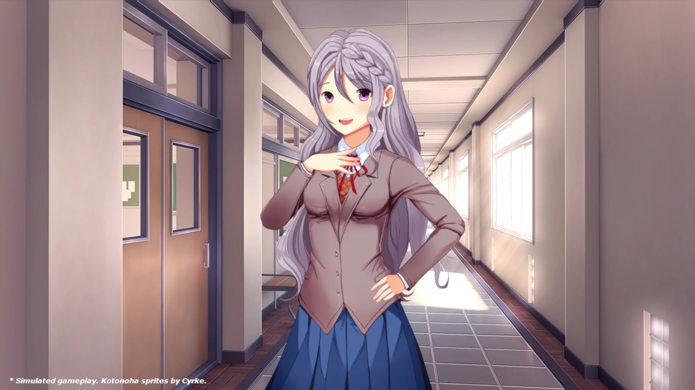

Doki Doki Yuri Reality is a mod for popular indie visual novel "Doki Doki Literature Club". We started developing this mod in 2018, and are working hard to release it by 2023. (Also we won't change the name to Yuriality.)

Synopsis.
Yuri Reality is a mod based on one simple premise: What if Monika wasn't in control? What if it was Yuri? Join MC and the whole Literature Club as they face an unstoppable enemy, and try to set things right.... Can she save Yuri Reality?